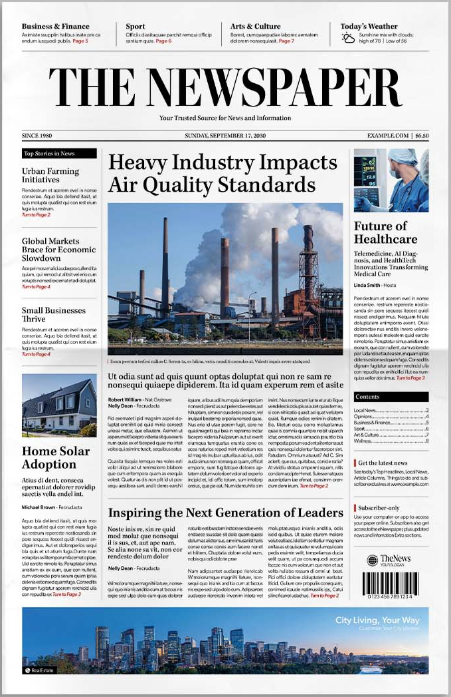
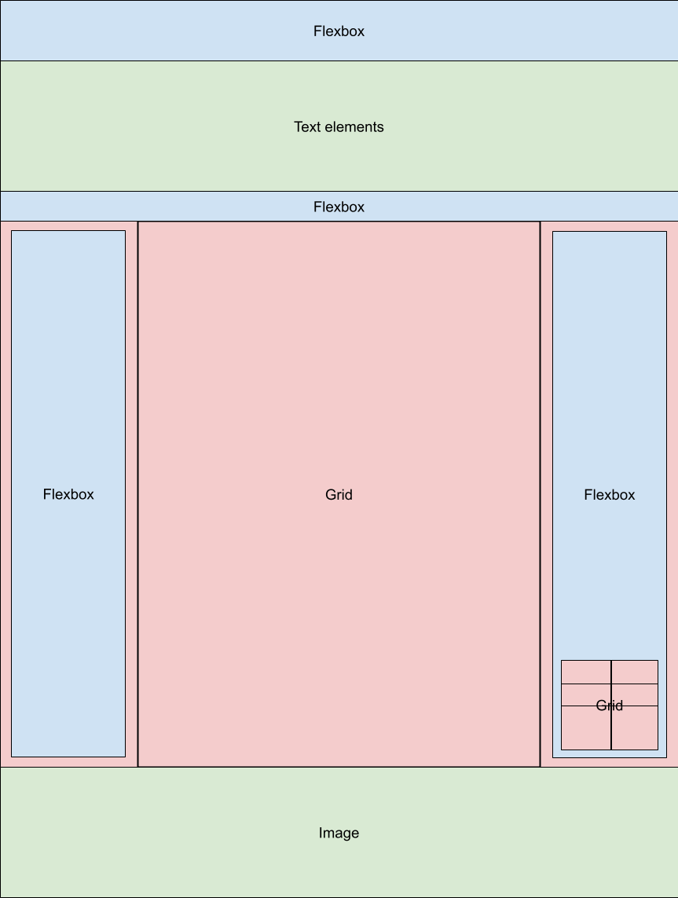
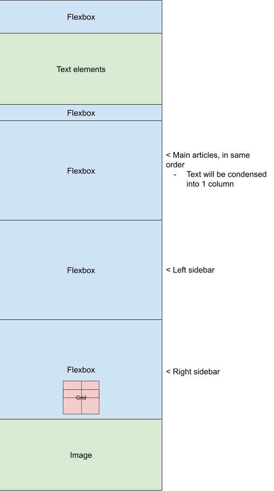

Original Image
This is the source for the original layout.
Link to imageGrid/Flex Planning - Phase 1
This is the Google drawing I made to plan out where grid/flexbox would be used in phase 1.
Link to imageGrid/Flex Planning - Phase 2
This is the Google drawing I made to plan out how I'd move and resize elements to fit on a mobile screen.
Link to imageLink to spec.html
Link to spec.htmlResources
Goal
Phase 1: N/A: Trying to match original as much as possible, regardless of my opinion.
Phase 2: Write a "newspaper" on a past project. My audience is people who have basic knowledge of games and how they're made. I decided to generally keep the newspaper format because I liked how I could have a "focused" section of text (through the main/secondary articles) and have a bunch of sub sections for those wanting a little more detail.
Other Notes
One difference between my initial phase 2 plan and the actual page is how the main content of the page is structured: The main content and sidebars are still all flexboxes but are also contained in a grid. The grid is used to allow for easy re-ordering of some elements when the screen is narrow.
When adapting content for phase 2, I ran into a weird spacing issue: When the page was too narrow, the bottom margin of one of my QR code element grew larger. I noticed that this only occured when I included the QR code as part of the overall grid. To fix this, I moved it to the center element, allowing it to flow into the page properly. It also made it automatically place itself around the middle of the page when viewing on mobile.
One last thing that I should mention: The "cqw" unit I use for the footer of the page is part of something called "container queries." I mention this because the "cqw" unit doesn't validate for some reason. In usage, they're not unlike media querries! I used the cqw unit (1% of a container's width) because I wanted to make the font size of the footer directly scale with the image's width on the page. I had issues doing this with the standard units so I'm glad that container querries exist!